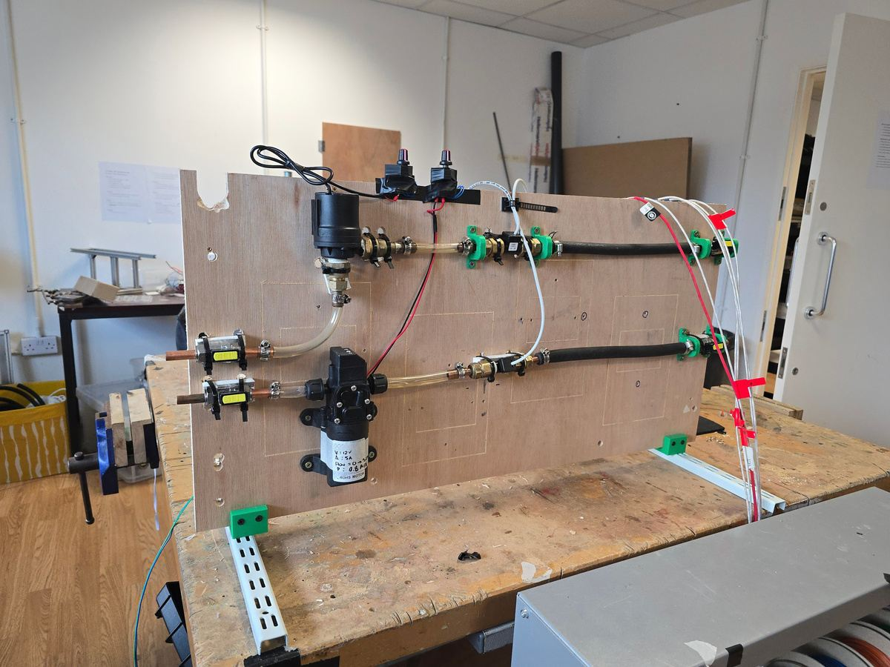
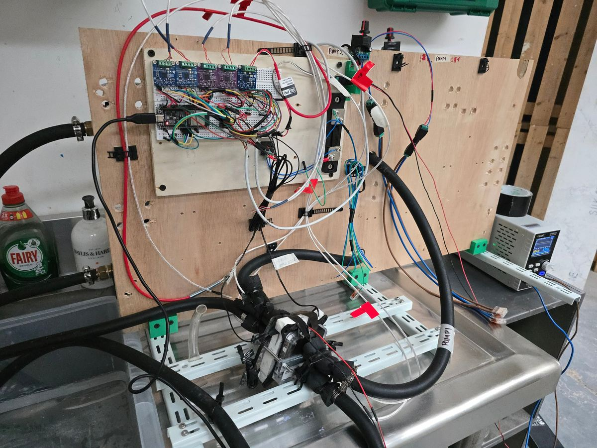

Anzen · Test rigs · 2 weeks
Made the Climate Wall cheaper to build and more efficient to run. In two weeks I built a rig that measured how the unit's thermoelectric coolers (TECs) really perform, and the data showed each unit could run on six instead of eight while raising its efficiency.

Cost
Two fewer TECs per unit
Cut the TEC count from 8 to 6, reducing the cost of every Climate Wall.
Performance
More efficient with fewer parts
Raised the unit's coefficient of performance (COP) by 0.7.
Evidence
Assumptions replaced by data
Corrected earlier performance estimates with measured results.
Team
Decisions made on data
Results chose the TEC model and fed the mechanical design and controls teams.
The TECs drive the Climate Wall's heating and cooling, and they are a large part of its electrical bill of materials. The team needed to know which TEC model, and how many, would meet the unit's target power draw.
The performance figures we had were assumptions, not measurements.
Designed and built a test rig in two weeks that set water flow remotely and logged TEC surface temperatures, flow rate, voltage and current, so overall efficiency could be calculated for each setup.
An ESP32 streamed live data over WiFi and MQTT, so tests could be set up and watched remotely instead of from the bench.
The data picked the TEC model best suited to the Climate Wall's target power draw. It showed the unit could drop from eight TECs to six while improving COP by 0.7, which cut cost per unit.
I fed the results back to the mechanical design and controls teams.
| Result | 8 → 6 TECs, COP +0.7 |
|---|---|
| Build time | 2 weeks, design to data |
| Controller | ESP32, programmed in C++ |
| Comms | WiFi and MQTT with live data monitoring |
| Control | Remote water-flow set points |
| Measures | TEC surface temperatures, water flow rate, voltage, current |
| Output | Overall efficiency (COP) for each TEC setup |

Contact